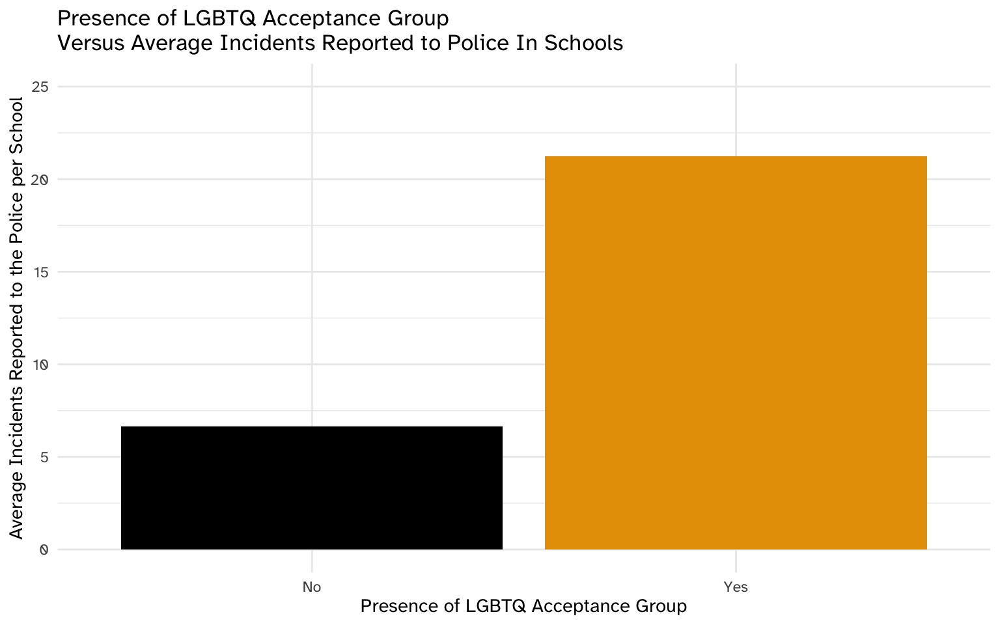

Data Diggers
Dashboard
Proposal
Write Up
Variable Analysis
About
The Data Diggers
Home
C0646: Legal Definitions
C0604: LGBTQ Group
C0153: Prohibit Cell Phone Use
C0110: Visitor Check in and Badges
Expand
Total Incidents Between School Size
Total Incidents Between Urbanicity
School Resources and Practices
Expand
Expand
Urbanicity
Expand

Expand
Urbanicity
Expand
Expand
Urbanicity
Expand
Expand
Urbanicity
Expand
![The graph is a jittered scatter plot titled, “Effect of School Resources on Incidents Reported to Police.” The x axis is “Amount of School Resources (out of 30)” and the y axis is “Total Number of Incidents Reported to the Police.” The x-axis ranges from 0 to a little above 30, and the y axis ranges from 0 to about 350. The points are clustered close to the x axis, with most of the points being below 100 incidents reported to police, though there are some outliers above this line. Most notably, there is one point located at 29 resources and 325 incidents reported to police. There are also more points clustered between 10 and 30 school resources compared to below 10 and over 30 (the points above 30 are due to the degree of variability that results from jittering the points). There appears to be a slight positive trend, with incidents reported to police increasing as amount of school resources increases, though it is very slight and difficult to discern. The shape of the distribution is a very slight left skew.](index_files/figure-html/scatter plot resources v. incidents all schools-1.png)
![This graph is a bar plot titled "Average Incidents Per School Compared to School Size". The x axis is "School Size" with four categories, each with their own bar: "less than 300," "300 - 499," "500 - 999," and "greater than or equal to 1000." The y axis is "Average Incidents Per School," ranging from 0 to about 30. The furthest-left bar, the "less than 300" bar, is solid from 0 to about 2.5. The second bar from the left, the "300 - 499" bar, is solid from 0 to about 3. The third bar from the left, the "500 - 999" bar, is solid from 0 to about 7. The furthest-right bar, the "greater than or equal to 1000" bar is solid from 0 to about 27.](index_files/figure-html/Bar-graph-comparing-incidents-to-school-size-1.png)
![This graph is a bar plot titled "Average Incidents Per School Compared to School Urbanicity". The x axis is "School Urbanicity" with four categories, each with their own bar: "City," "Suburban," "Town," and "Rural." The y axis is "Average Incidents Per School," ranging from 0 to about 30. The furthest-left bar, the "City" bar, is solid from 0 to about 14. The second bar from the left, the "Suburban" bar, is solid from 0 to about 13. The third bar from the left, the "Town" bar, is solid from 0 to a little above 10. The furthest-right bar, the "Rural" bar is solid from 0 to about 7.](index_files/figure-html/Bar-graph-comparing-incidents-to-urbanicity-1.png)
![The graph is a bar plot titled, “Sworn Law Enforcement Officers Participating in Providing Legal Definitions Versus Average Incidents Reported to Police in Schools.” The x axis is “Presence of Sworn Law Enforcement Officers Participating in Providing Legal Definitions” with the left bar labeled “No” and the right bar labeled “Yes.” The y axis is “Average Incidents Reported to the Police per School” and ranges from 0 to about 25. The left bar, the “No” bar, is filled in to about 4, and the right bar, the “Yes” bar, is filled in to about 18.](index_files/figure-html/Legal-Def-Vary-with-Incidents-1.png)
![The graph is a segmented horizontal bar plot titled, “Sworn Law Enforcement Officers Participating in Providing Legal Definitions Versus School Urbanicity.” The x axis is “Quantity of Schools” and ranges from 0.00 to 1.00. The y axis is "Presence of Sworn Law Enforcement Officers Participating in Providing Legal Definitions," with one bar for "Yes" and one bar for "No." Color is used in this plot to represent "School Urbanicity," with one color representing "City," one representing "Suburban," one representing "Town," and one representing "Rural." The "Yes" bar shows the breakdown of City, Suburban, Town, and Rural schools with sworn law enforcement officers participating in providing legal definitions, while the "No" bar shows the breakdown of schools that do not have these officers participating. For the "Yes" bar, the "Rural" portion of the bar goes from 0.00 to about 0.22, the "Town" portion goes from about 0.22 to about 0.37, the "Suburban" portion goes from about 0.37 to about 0.78, and the "City" portion goes from about 0.78 to 1.00. For the "No" bar, the "Rural" portion of the bar goes from 0.00 to about 0.24, the "Town" portion goes from about 0.24 to about 0.35, the "Suburban" portion goes from about 0.35 to about 0.70, and the "City" portion goes from about 0.70 to 1.00.](index_files/figure-html/Law-Officers-Legal-Def-Vary-with-Urbanicity-1.png)
![The graph is a segmented horizontal bar plot titled, “Presence of LGBTQ Acceptance Group Versus School Urbanicity.” The x axis is “Quantity of Schools” and ranges from 0.00 to 1.00. The y axis is "Presence of LGBTQ Acceptance Group," with one bar for "Yes" and one bar for "No." Color is used in this plot to represent "School Urbanicity," with one color representing "City," one representing "Suburban," one representing "Town," and one representing "Rural." The "Yes" bar shows the breakdown of City, Suburban, Town, and Rural schools with sworn law enforcement officers participating in providing legal definitions, while the "No" bar shows the breakdown of schools that do not have these officers participating. For the "Yes" bar, the "Rural" portion of the bar goes from 0.00 to about 0.15, the "Town" portion goes from about 0.15 to about 0.20, the "Suburban" portion goes from about 0.20 to about 0.69, and the "City" portion goes from about 0.69 to 1.00. For the "No" bar, the "Rural" portion of the bar goes from 0.00 to about 0.28, the "Town" portion goes from about 0.28 to about 0.43, the "Suburban" portion goes from about 0.43 to about 0.77, and the "City" portion goes from about 0.77 to 1.00.](index_files/figure-html/LGTBQ-support-vary-with-urbanicity-1.png)
![The graph is a bar plot titled, “Non-Academic Use of Cell Phones Prohibited During School Hours Versus Average Incidents Reported to Police In Schools.” The x axis is “Prohibited Non-Academic Use of Cell Phones During School Hours” with the left bar labeled “No” and the right bar labeled “Yes.” The y axis is "Average Incidents Reported to the Police per School” and ranges from 0 to about 20. The left bar, the “No” bar, is filled in to about 16, and the right bar, the “Yes” bar, is filled in to about 9.5.](index_files/figure-html/Cell-Phones-Prohibited-Vary-with-Incidents-1.png)
![The graph is a segmented horizontal bar plot titled, “Non-Academic Use of Cell Phones Prohibited During School Hours Versus School Urbanicity.” The x axis is “Quantity of Schools” and ranges from 0.00 to 1.00. The y axis is "Prohibited Non-Academic Use of Cell Phones During School Hours," with one bar for "Yes" and one bar for "No." Color is used in this plot to represent "School Urbanicity," with one color representing "City," one representing "Suburban," one representing "Town," and one representing "Rural." The "Yes" bar shows the breakdown of City, Suburban, Town, and Rural schools with sworn law enforcement officers participating in providing legal definitions, while the "No" bar shows the breakdown of schools that do not have these officers participating. For the "Yes" bar, the "Rural" portion of the bar goes from 0.00 to about 0.21, the "Town" portion goes from about 0.21 to about 0.36, the "Suburban" portion goes from about 0.36 to about 0.71, and the "City" portion goes from about 0.71 to 1.00. For the "No" bar, the "Rural" portion of the bar goes from 0.00 to about 0.20, the "Town" portion goes from about 0.20 to about 0.35, the "Suburban" portion goes from about 0.35 to about 0.76, and the "City" portion goes from about 0.76 to 1.00.](index_files/figure-html/Cell-Phones-Prohibited-Vary-with-Urbanicity-1.png)

![The graph is a segmented horizontal bar plot titled, “Required Visitor Check In and Badges Versus School Urbanicity.” The x axis is “Quantity of Schools” and ranges from 0.00 to 1.00. The y axis is "Required Visitor Check In and Badges," with one bar for "Yes" and one bar for "No." Color is used in this plot to represent "School Urbanicity," with one color representing "City," one representing "Suburban," one representing "Town," and one representing "Rural." The "Yes" bar shows the breakdown of City, Suburban, Town, and Rural schools with sworn law enforcement officers participating in providing legal definitions, while the "No" bar shows the breakdown of schools that do not have these officers participating. For the "Yes" bar, the "Rural" portion of the bar goes from 0.00 to about 0.20, the "Town" portion goes from about 0.20 to about 0.34, the "Suburban" portion goes from about 0.34 to about 0.73, and the "City" portion goes from about 0.73 to 1.00. For the "No" bar, the "Rural" portion of the bar goes from 0.00 to about 0.42, the "Town" portion goes from about 0.42 to about 0.57, the "Suburban" portion goes from about 0.57 to about 0.70, and the "City" portion goes from about 0.70 to 1.00.](index_files/figure-html/Visitor-Check-In-Vary-with-urbanicity-1.png)